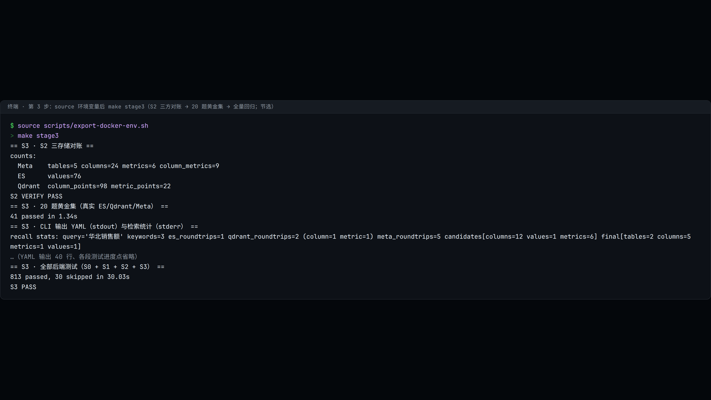
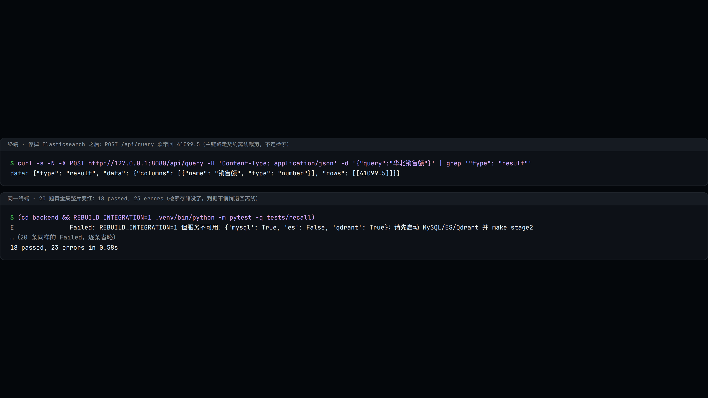

练本 · 阅读版（md 正典派生，改内容请改 manual/page-14.md）
第 14 页 · 审检索：召回空了的答案，你凭什么信
前置
整栈在跑：第 13 页的五个长驻服务
docker compose ps里healthy；backend/.venv已由第 0 页make install建好。不改代码：本页不改被跟踪的代码/契约——
lab save只在.lab/下写快照（已被 gitignore）。在哪跑：命令都在仓库根目录、同一个终端里整段连续执行；
.env里改过FRONTEND_HOST_PORT的话，下面每条命令里的 8080 都换成你那个端口。
这一页构建什么
从“能查数”到“能审检索”：用 20 题黄金集给检索层立三条判据（该命中 / 不该出现 / 输出规模上限），再亲手停掉检索存储——查数照常成功（契约离线裁剪兜底），而黄金集整片变红。
审的顺序：先写下判据，再让机器去撞。
猜一猜
动手前写下答案：
- 停掉 Elasticsearch 之后，再问“华北销售额”，
POST /api/query会失败、变慢，还是照常给出一个数？ - 黄金集 20 题，真实检索能全中的有几题——20 题全中、15 题左右，还是不到 10 题？
动手
第 1 步：拍快照。 本页不改被跟踪的代码/契约，拍一张是兜底（lab save 只往 .lab/ 写快照，该目录已被 gitignore）；同名快照会被拒，重做本页就换个名字：
scripts/lab save p14-before
回显 已保存快照 "p14-before"：169 个文件。（169 数的是你工作区里的文件，因环境而异）。
第 2 步：先跑离线判据（不需要任何服务；解释器来自第 0 页 make install 建好的 backend/.venv）。
backend/.venv/bin/python -m pytest backend/tests/recall -q
三组字段：黄金集是 backend/tests/recall/golden.yaml 里的 20 题，每题三组字段：expected_*（必须被召回）、must_not（不许出现）。
三条判据：backend/tests/recall/test_golden.py 还查 precision 下限和输出规模上限——允许额外候选，但不许把所有表/列/指标整片塞进上下文。这三条就是“召回算不算合格”的判据。
第 3 步：真跑 20 题。 source 把 .env 里的端口和密码导给宿主 CLI（成功时无输出）。
没 source 会红：新终端或重跑前先重新 source scripts/export-docker-env.sh（或回第 13 页的 .env 口径），没 source 会红 S2 FAIL: 缺少环境变量 REBUILD_MYSQL_PASSWORD… 并提示先 source。
make stage3 干什么：会把“华北销售额”的召回结果写到 /tmp/rebuild-s3-recall.yaml 并打印前 40 行（scripts/recall-demo.sh 干的）。它要跑半分钟左右，别以为卡死。
栈被停过会红：红在第一条 S2 FAIL: 读取 manifest 失败：(2003, "Can't connect to MySQL server on '127.0.0.1' ([Errno 111] Connection refused)")。恢复分三档：
- 只是容器被停：
docker compose start拉回来（不重建）。 - 要整体重起：
docker compose up -d。 - 只有镜像/代码要重做才用
make docker-up（它--build重建，约 8 分钟）。
source scripts/export-docker-env.sh
make stage3
你应该看到
第 2 步（节选；秒数因机器而异）：
18 passed, 23 skipped in 0.44s
23 条 skipped 不是失败：只有设了 REBUILD_INTEGRATION=1 才跑真实 ES/Qdrant 检索的那批测试。
第 3 步（节选；耗时每次不同。candidates[...] 随向量索引装载状态略有出入，对账只看 final[...] 那段）：
S2 VERIFY PASS
== S3 · 20 题黄金集（真实 ES/Qdrant/Meta） ==
41 passed in 1.22s
== S3 · CLI 输出 YAML（stdout）与检索统计（stderr） ==
recall stats: query='华北销售额' keywords=3 es_roundtrips=1 qdrant_roundtrips=2 (column=1 metric=1) meta_roundtrips=5 candidates[columns=… values=1 metrics=…] final[tables=2 columns=5 metrics=1 values=1]
...
813 passed, 30 skipped in 33.94s
S3 PASS


对账
- 猜 1：不会失败——照常回一个数（拆一刀会真验）。
- 走哪条路：主链路
POST /api/query用的是backend/app/agent/orchestrator.py里默认的OfflineContextBuilder。 - 读什么：8 个阶段只读契约（表粒度、字段角色、枚举值域），不打开 ES/Qdrant 连接。
- 走哪条路：主链路
- 猜 2：20 题全中。
41 passed = 18 条离线测试 + 20 条“每题过判据” + 3 条汇总断言（precision/recall 下限）。- 会掉的条件：有题漏召回（召回 0 条）或多出不该有的字段/指标（召回错条），
41就会掉。
- 会掉的条件：有题漏召回（召回 0 条）或多出不该有的字段/指标（召回错条），
- 检索给的是候选，不是答案：
recall stats那行candidates[columns=… values=1 metrics=…] → final[tables=2 columns=5 metrics=1 values=1]就是证据。- 裁剪：候选字段被裁成 5 个进上下文（
candidates的列/指标数会随向量索引状态浮动，columns≈8–13 / metrics≈5–6，别逐字对；final[...]才是对账口径）。 - YAML 里是什么：表、字段、指标、取值这些候选与契约字段；没有生成好的 SQL，也没有执行结果。答案要经过生成、校验、执行才出现。
- 裁剪：候选字段被裁成 5 个进上下文（
OfflineContextBuilder为什么能兜底：契约里已经写明每张表的粒度、每列的角色与值域，这足够裁出一份“能写 SQL”的上下文，所以主链路不连检索。- 增强项：检索（ES + Qdrant + Meta）只出现在
make stage3与集成测试里——它是增强项，不是依赖项。
- 增强项：检索（ES + Qdrant + Meta）只出现在
- 黄金集为什么是判据、不是眼睛：“看着差不多”不可复核；
expected_*、must_not、precision 下限、输出规模上限都能被一条命令判红绿，换个人重跑结果一样。- 两头防：
must_not专门防“全召回作弊”，expected_*防漏召回。
- 两头防：
- 召回 0 条和召回错条不是一回事：所以判据要两头写。
- 0 条：“没有候选”，生成器没料可用，会大声失败（拒答/报错）。
- 错条：“候选错了”，生成器拿到错字段，仍可能写出一条能跑、语义却错的 SQL——那是静默错误，更难发现。
- 兜底与硬撑：契约覆盖到的问题（华北销售额），检索停了一样对，这是兜底。
- 硬撑：契约外的词（用同一条 curl 问
火星销售额）主链路把认不出的“火星”直接丢掉，照常回总销售额279159.5——它手里没有“召回为空”这个信号，只能硬撑。这是审生成的下一道题。
- 硬撑：契约外的词（用同一条 curl 问
你现在拥有：一条能自己判断“召回算不算合格”的验收链——20 题黄金集 + 三条可执行判据，
18 passed, 23 skipped证明判据本身对，41 passed / S3 PASS证明检索当前全中；也知道了它不在主链路上。
拆一刀
本页的刀：把检索停掉，看哪些成功是契约兜底、哪些是机器硬撑。
动手前确认还在同一个终端、且已 source scripts/export-docker-env.sh（新终端先补一次）。
没 source 的红法：直接跑 pytest 会先红 Failed: REBUILD_INTEGRATION=1 但服务不可用：{'mysql': False, …}，那不是黄金集变红。
- 只停检索，别停整栈。
make docker-down会把库和入口一起停掉，下一页还要用；这里只停一座检索存储（停 Qdrant 效果一样——检索的验收依赖三样，少一样就整条不工作）：
docker compose stop elasticsearch
- 再查一次数。 走第 13 页的前端入口（命令里的
8080是.env默认值；第 13 页改过FRONTEND_HOST_PORT就换成你的端口——端口不对会回 404Router not found，像接口坏了）：
curl -s -N -X POST http://127.0.0.1:8080/api/query -H 'Content-Type: application/json' -d '{"query":"华北销售额"}' | grep '"type": "result"'
查数成功，结果不降级：
data: {"type": "result", "data": {"columns": [{"name": "销售额", "type": "number"}], "rows": [[41099.5]]}}
- 再看召回这条路。 把黄金集的真检索单跑一遍（就是
make stage3的第 2 步），20 题整片变红：
(cd backend && REBUILD_INTEGRATION=1 .venv/bin/python -m pytest -q tests/recall)
18 passed, 23 errors in 0.58s
Failed: REBUILD_INTEGRATION=1 但服务不可用：{'mysql': True, 'es': False, 'qdrant': True}；请先启动 MySQL/ES/Qdrant 并 make stage2
红的原因不是题变了，是判据依赖的存储没了——它宁可整片报错，也不悄悄退回离线结果。
- 还原。 只把停掉的服务拉回来：
docker compose start elasticsearch。
不重建：start 只重启容器、不重建；要整体重起用 docker compose up -d，只有镜像/代码要重做才用 make docker-up——它会 --build 重建、约 8 分钟。
等 healthy：start 立刻返回，ps 头 20 秒左右只显示 (health: starting)；轮询等到 (healthy) 再跑 make stage3，否则会红一段再重来（本页实测约 20–30 秒）：
docker compose start elasticsearch
until docker compose ps elasticsearch | grep -q '(healthy)'; do sleep 2; done # 无输出地退出 = 已 healthy
回绿：再跑一次 make stage3 回到 S3 PASS（本页实测过）。
快照留着：本页没改被跟踪的代码/契约，scripts/lab reset 用不上，快照留给重做本页兜底：
make stage3
结论：检索是增强，契约才是底线。
停掉检索：主链路照常查数（契约裁剪兜底），但黄金集 20 题整片红——需要检索的地方它不装。
下一刀：契约外的未知词（火星销售额）主链路会硬撑出一个数，那才是下一刀要审的地方。